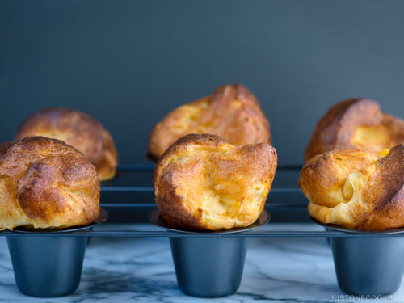

Popovers
This recipe is from my favorite restaurant, The Rotunda! These popovers are usually served with a homemade strawberry butter as well, and taste amazing!

Ingredients
Popovers
3 1/2 cups whole milk
4 cups all-purpose flour (plain flour)
1 1/4 tsp kosher or sea salt (I use Diamond Crystal; use half for table salt)
1 tsp baking powder
6 large eggs (50 g each w/o shell) (at room temperature)
non-stick cooking spray
Strawberry Butter
1/2 cup unsalted butter (8 Tbsp at room temperature)
1/4 cup strawberry jam
Instructions
Gather all the ingredients. For this recipe, you will need 2 popover pans. If you use muffin pans instead, use every other tin so that the popovers have plenty of room to expand OR pour only halfway up with batter.
Place the milk in a bowl (or 4-cup measuring cup) and microwave on high for 2 minutes, or until warm to the touch.
Sift the flour, salt, and baking powder together into a large mixing bowl.
Add the eggs into the stand mixer fitted with a whisk. Beat on medium speed for about 3 minutes, until foamy and pale in color.
Turn down the mixer to low and add the warm milk.
Gradually add the flour mixture and beat on medium speed for about 2 minutes.
Turn the machine off and let the batter rest for 1 hour at room temperature.
When it is almost 1 hour, preheat the oven to 425 degrees farenheit (220 degrees celsius). For a convection oven, reduce cooking temperature by 25 degrees farenheit (15 degrees celsius). Place each of the popover pans on a baking sheet and spray the pans with nonstick spray.
Fill the popover pans with the batter 3/4 full.
Transfer to the oven and bake on 425 degrees farenheit (220 degrees celsius) degree for 15 minutes. Then turn down the oven temperature to 375 degrees farenheit (190 degrees celsius) degree and bake for 30 minutes, or until the popovers are a deep golden brown on the outside and airy on the inside.
Strawberry Butter
While baking the popovers, make strawberry butter. Place the butter in the stand mixer and beat on high until light and fluffy. Add the preserves and beat until well combined. To save the strawberry butter, keep it in an airtight container and store in the refrigerator for 2-3 days.
Home Page